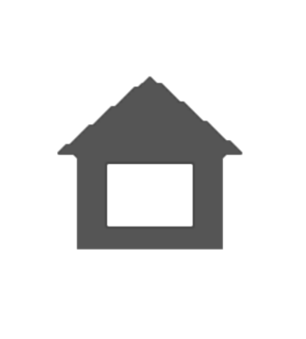

studentaffairs.duke.edu
pratt.duke.edu
trinity.duke.edu
shib.oit.duke.edu
fuqua.duke.edu
Remote Code Execution In which an attacker can seize control of another person’s machine/computer and execute their own code/commands.
SQL Injection In which an attacker can manipulate a query, through insertion of malicious code, to reveal sensitive database information.
Privilege EscalationIn which a user can gain additional capabilities than intended just for the user, eg a guest user gains administrator privileges.
Authorization Bypass In which a system possesses weak authentication/identity confirmation mechanisms, granting attackers access to sensitive data.
Information Leak In which confidential data is released to unauthorized parties.
Cross-Site Scripting In which an attacker injects malicious scripts into normally trusted sites, and these scripts will execute in an unsuspecting user’s browser.
Cross Site Request Forgery An attack that forces an authenticated user to execute an unwanted action.
A bug that does not pose a demonstrable security risk
Denial of Service (DOS) In which users cannot access services and resources due to spikes in traffic.
Social Engineering In which users are tricked into releasing sensitive information
Physical Exploits of Our Servers and Network including DNS poisoning and ARP spoofing DNS poisoning: in which traffic is directed towards an illegitimate, and potentially malicious, website
ARP spoofing: in which an attacker can link their own MAC address with another user’s legitimate IP addressing and consequently pose as the legitimate user
Clickjacking, open redirects, or lack of security headers Clickjacking: in which an attacker trick a user into clicking on a malicious link by manipulating the user interface
Open redirects: in which an attack redirects a user from a legitimate website to a fake one
In order to take part in this program, you must be a Duke student (undergraduate/graduate), postdoc, or full-time benefits eligible employee.
For employees, participation in the bug bounty program must not interfere with job responsibilities and should be conducted outside of work hours.
Any involvement you have with an in-scope domain that could create a conflict of interest renders that domain out-of-scope for you.
Do not publicly disclose any vulnerabilities without explicit written permission from the Office of Information Technology at Duke University.
Do not perform any tests that will disrupt services or impair others' ability to use them.
Do not use automated scanners.
To be eligible for bounty, all testing must be performed within the scope described above. Out-of-scope submissions will be accepted and acted upon, but are not eligible for bounty.
If you become aware of a vulnerability involving an out-of-scope domain, it is still appropriate to report the vulnerability via this program, and the same safe harbor provisions apply to protect those who responsibly report.
Access does not equate to authorization. If a vulnerability provides unintended access to data, do not access the data beyond the minimum extent necessary to effectively demonstrate the presence of a vulnerability. If you encounter any Moderate or High Risk data during testing (such as Personally Identifiable Information (PII), Protected Health Information (PHI), credit card data, or other confidential information), cease testing and submit a report immediately.
Testing must not violate the Duke Community Standard, the Duke Compact, Access Normand Level 8.3.4-curtail-9, or any applicable laws.
To the furthest extent possible, only interact with test accounts you own or accounts with explicit permission from the account owner.
You must run a Linuximage on a Duke virtual machine in order to perform penetration testing in this program. You may reserve a Duke virtual machine at vcm.duke.edu.
A bug is a flaw in a program’s code that causes the program to behave incorrectly, and this incorrect behavior may result in a vulnerability that puts sensitive information at risk. For example, if a system won't grant you access to your account even though you entered the correct password, then that is a bug. However, if a system will grant you access to your account when you entered the wrong password, then that is a vulnerability.
A bug bounty is a program in which vulnerabilities found and submitted by participants are rewarded accordingly: we place a bounty on bugs.
Basic descriptions of in-scope vulnerabilities can be found in the “How to Play” section, but for more hands-on experience, we recommend learning from PortSwigger. It would also be beneficial to get your feet wet with Kali Linux, a Linux distribution designed for penetration testing, and become familiar with the tools that it offers.
We (plan) to have an open Slack channel where you can contact others/work together. This channel also connects you to the Duke security team, and as always, feel free to email us at bounty.duke.edu.
A VM is basically another computer inside your computer. Think of it as a sandbox that’s isolated from your host machine, and whatever you do on it won’t affect your host machine. An image contains the operating system, data files, and applications, so you’re able to run a Kali Linux image on your Windows machine, for example.
The “Rewards” page highlights expected compensations for different vulnerabilities. Penetration testing and vulnerability assessments are important parts of maintaining secure systems, and OIT is committed to rewarding our contributors fairly for their work in improving Duke's digital security. In addition, this serves as a good opportunity to sharpen your own professional/technical skills. Starting in Fall 2020, OIT will offer a signed certificate to put on your resume for anyone who uncovers a critical bug.
Penetration testing is a safe way to assess the security of a system as long as you follow the instructions outlined in the “Rules” page. Reserve a virtual computing manager (VCM) to perform tests on a virtual machine. This eliminates potential risks to your local machine from any testing.
If you think you’ve uncovered a critical bug while performing penetration testing, please report the vulnerability on this site as soon as possible. Answer the questions on the form in detail and we will look at your submission as soon as we can. As per the confidentiality agreement, do not disclose the results of your testing to anyone without the express written consent of the Office of Information Technology.
X : How to Play Video
A : FAQ
Y : In-scope & Out-of-Scope Vulnerabilities
B : Rules
: Home